Osaka · пятница 23.10 вечером
Где ты и куда пойти: бары с видом, клубы, прогулки · проверено 23.10.2026 ~21:10 JST
☔ Дождь с ~23:00 (84%), сильный после 01:00 (Open-Meteo). Открытые крыши - до 23:00, зонт с собой.
Вся Осака Мой район (Umeda) Minami (неон)
⏰ До скольки работает Осака
до 22:30-23:00 Смотровые: Umeda Sky (вход до 22:00), колесо HEP FIVE (посадка до 22:45) до 23:30-24:00 Бары отелей с видом: ADEE (23:30), Smoke & Spin и 40 Sky Bar (24:00) до 01:00 Canes & Tales, Waldorf Astoria (пт-сб) до 03:00-05:00 Клубы и DJ-бары: GIRAFFE 22-04, GHOST 22-05, BAR Inc сегодня 20-03 00:10 Последнее метро Namba → Umeda (в 00:19 у отеля). Позже - такси, ~4 км
Как в Токио: всё красивое с видом закрывается к 23-24. Дальше до утра живут клубы и DJ-бары, в основном в Minami.
🚇 Как доехать до неона (Minami)
От отеля ~5 мин пешком до станции Umeda , линия Midosuji (красная) , платформа 1, поезд на Nakamozu . 📍 станция
Остановки: Yodoyabashi → Hommachi → Shinsaibashi (~7 мин) или дальше до Namba (8 мин). Поезда каждые несколько минут. 🚇 маршрут
Из Shinsaibashi - 10 мин пешком по крытой улице Shinsaibashi-suji до моста Ebisubashi. Из Namba - 5 мин.
Обратно: последний поезд Namba 00:10 → Umeda 00:19 (платформа 2, на Shin-Osaka). Позже - 🚕 такси до отеля , без пробок ~7 мин, цену не проверял. Мой район · Umeda и Kitashinchi (пешком)
Вечером здесь больше бары отелей с видом и izakaya; клубы с расписанием на сегодня, которые я нашёл, все в Minami.
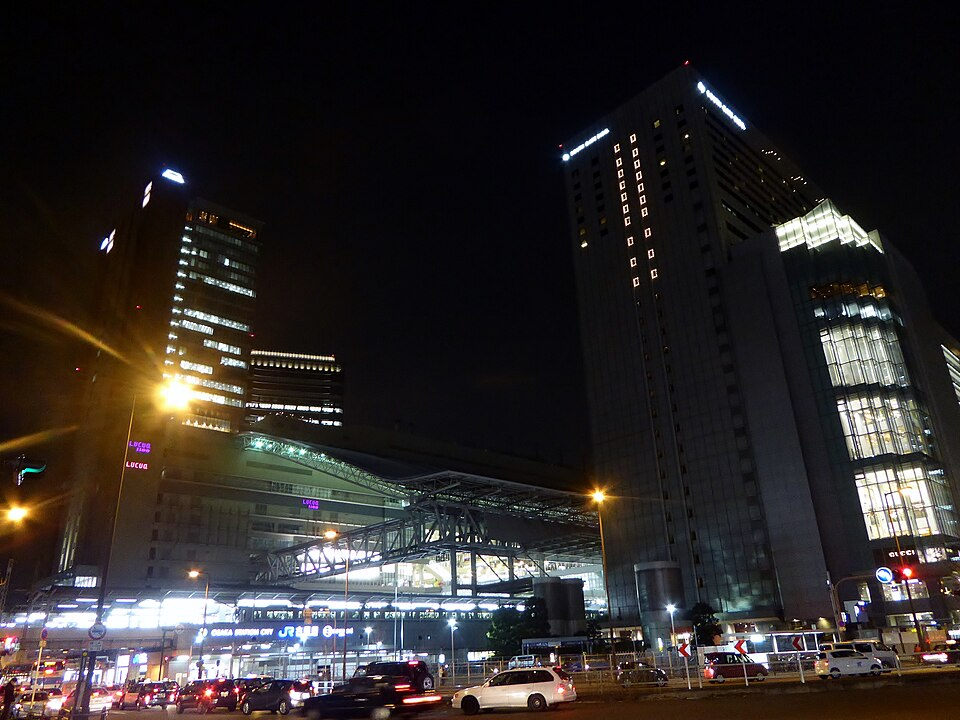
Wikimedia Commons · Tokumeigakarinoaoshima · CC0
★
Hotel Granvia Osaka - ты здесь
Отель
Отель в здании станции JR Osaka (Umeda). Отсюда всё в Umeda пешком 5-15 мин, до Minami 8 мин на метро.
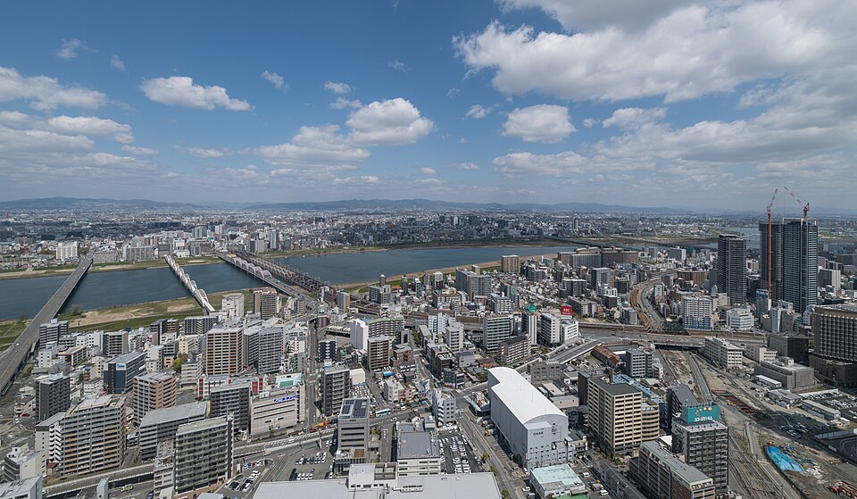
Wikimedia Commons · DXR · CC BY-SA 4.0 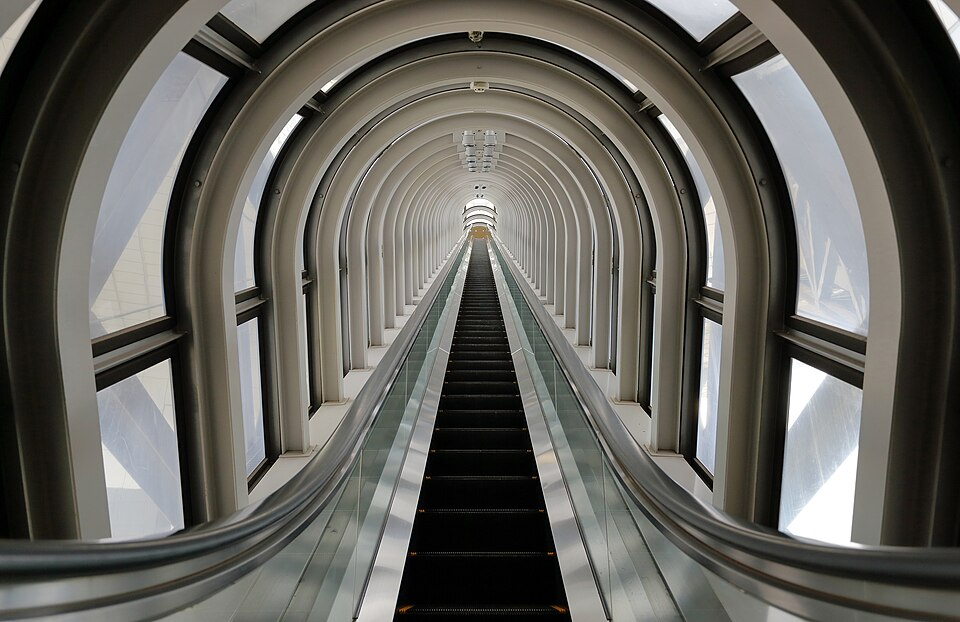
Wikimedia Commons · Martin Falbisoner · CC BY-SA 4.0
1
Umeda Sky Building - смотровая на крыше
Вид
Открытая круговая площадка на крыше 173 м между двумя башнями, ночная панорама всего города. Наверх через стеклянную трубу-эскалатор.
Часы
9:30-22:30, вход до 22:00 · 2 000 ¥
Как далеко
~15 мин пешком
Источник
ANA travel planner, справочные сайты
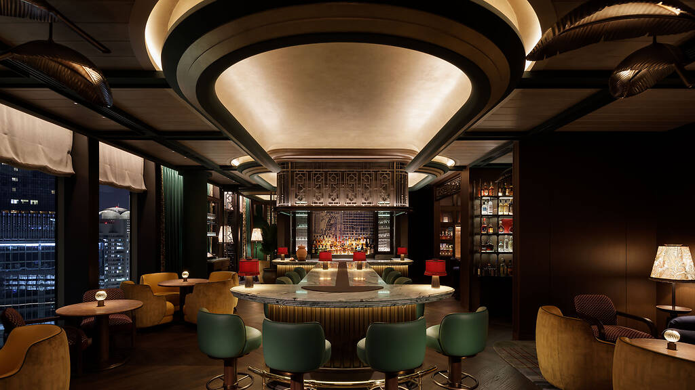
Time Out Osaka
2
Canes & Tales - бар Waldorf Astoria
Бар / руфтоп
Новый (2025) коктейльный бар-«спикизи» отеля Waldorf Astoria в стиле 1920-х, по входу без брони. Самый поздний из фэнси-баров рядом с отелем. Какая музыка - не проверял.
Часы
пт-сб 17:00-01:00 (последний заказ 00:30)
Как далеко
~13 мин
Источник
Hilton (офиц.), Time Out
фото не нашёл в открытых источниках
3
ADEE - бар InterContinental, 20 этаж
Бар / руфтоп
Лаунж-бар с видом на Umeda с 20 этажа, Grand Front Osaka. Спокойный, для коктейля с видом.
Часы
пт 17:00-23:30 (заказ до 23:00)
Как далеко
~13 мин
Источник
icosaka.com (офиц.)
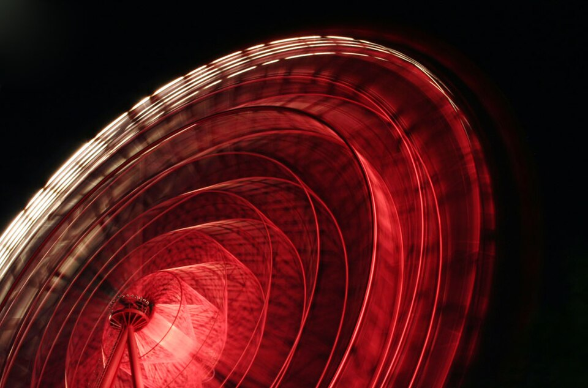
Wikimedia Commons · BradBeattie · CC BY-SA 3.0 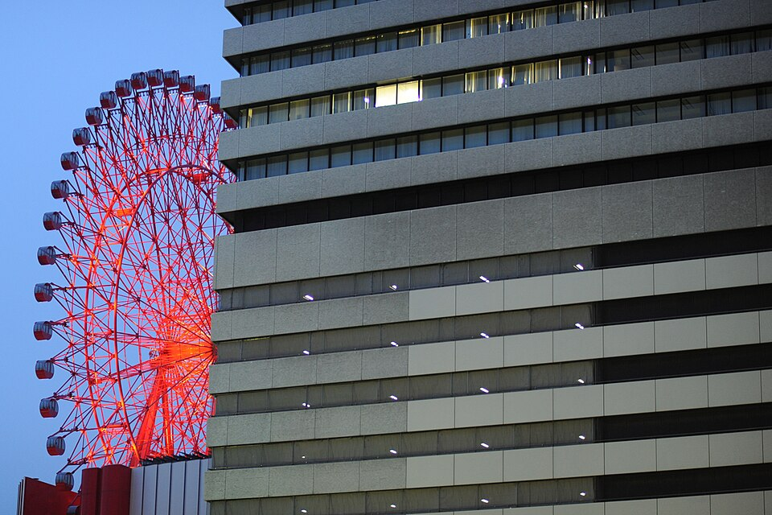
Wikimedia Commons · Mstyslav Chernov/Unframe/unframe.com · CC BY-SA 3.0
4
Колесо обозрения HEP FIVE
Вид
Красное колесо на крыше торгового центра в центре Umeda, круг ~15 мин. С октября 2025 по весну 2026 было на ремонте - что открылось, я не подтвердил, глянь на входе.
Часы
11:00-23:00, посадка до 22:45 · ~1 000 ¥
Как далеко
~8 мин
Источник
osaka-info.jp
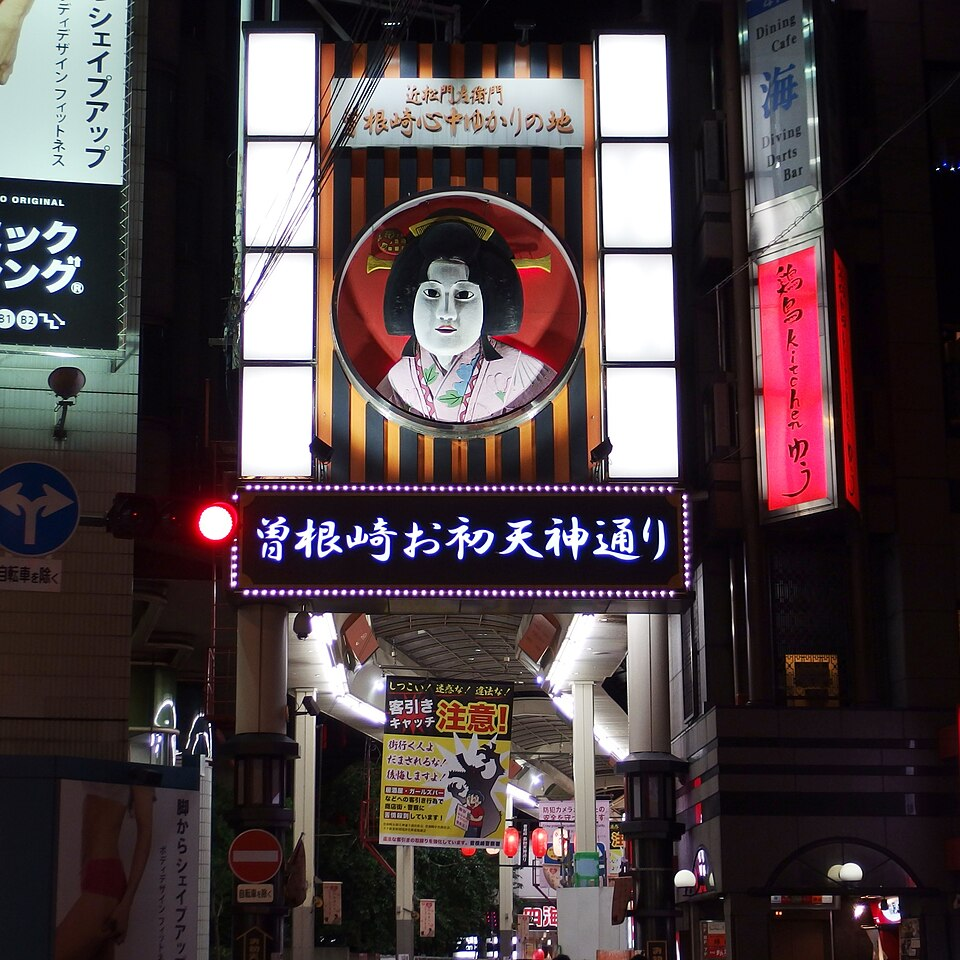
Wikimedia Commons · Mc681 · CC BY-SA 4.0 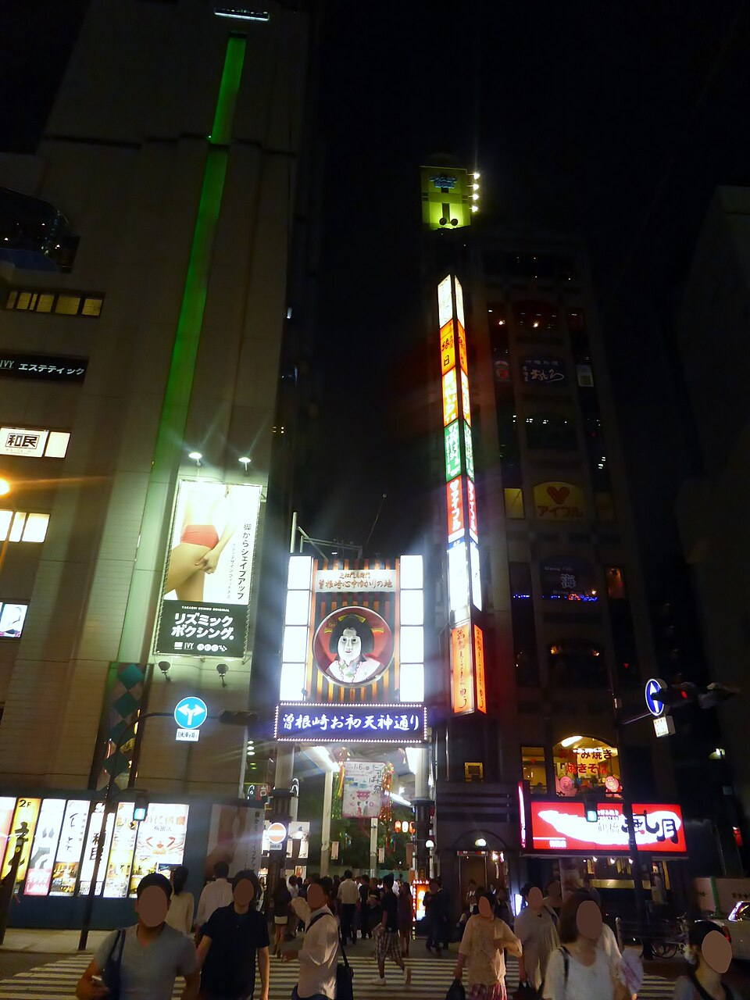
Wikimedia Commons · Tokumeigakarinoaoshima · CC0
5
Ohatsu Tenjin и переулки Urasando
Прогулка
Святилище посреди Umeda и улочки за ним: izakaya, стоячие бары, местные после работы. Самое живое место в Umeda, где проще разговориться.
Часы
izakaya обычно до ночи, часы у каждого свои
Как далеко
~8 мин
Источник
гиды (magical-trip), не офиц.
фото не нашёл в открытых источниках
6
Kitashinchi - дорогой барный квартал
Бар / руфтоп
«Гинза Осаки»: костюмы, каблуки, сотни баров в многоэтажках. Важно: вывески «club» и «lounge» здесь обычно = хостес-клубы (очень дорого, не для знакомств). Заходи только в коктейль-бары, зазывал игнорируй.
Часы
бары до ночи
Как далеко
~5 мин
Источник
Osaka Tourism (Kitashinchi guide)
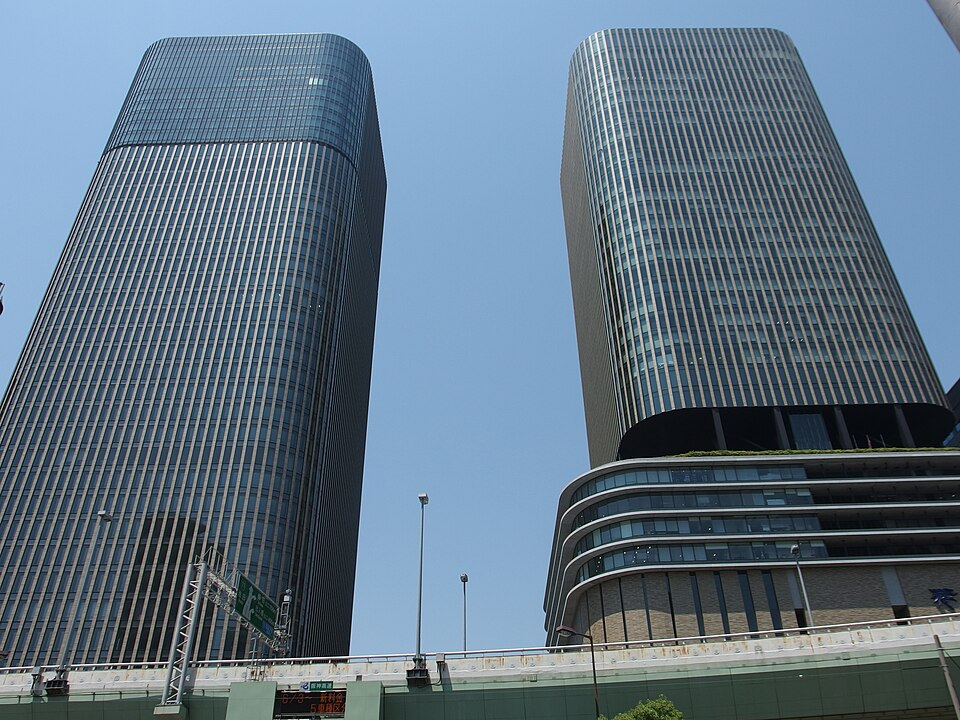
Wikimedia Commons · Mc681 · CC BY-SA 4.0
7
40 Sky Bar & Lounge - Conrad, 40 этаж
Бар / руфтоп
Самый высокий бар с видом в Kita, Nakanoshima. Фэнси, иногда живая музыка; публика в основном за столиками.
Часы
ср-сб 11:00-24:00 · с 20:00 до 22:30 сбор 1 650 ¥
Как далеко
~13 мин
Источник
Hilton (офиц.), TableCheck
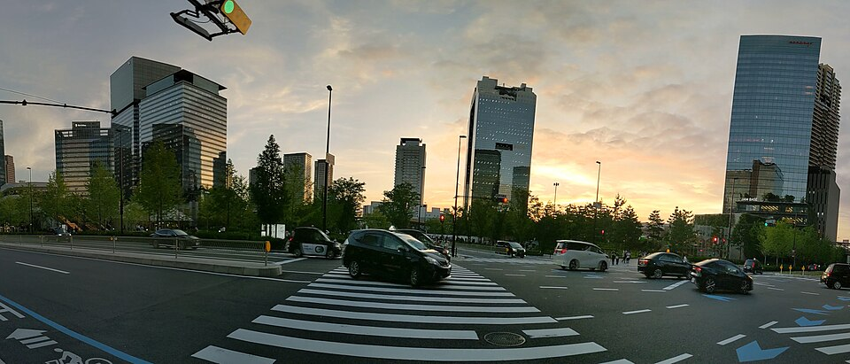
Wikimedia Commons · Mr.ちゅらさん · CC BY-SA 3.0
8
Grand Green Osaka - новый парк у станции
Прогулка
Новый городской парк (2024-2025) сразу к северу от станции, между небоскрёбами. Тихая прогулка по пути к Umeda Sky.
Часы
ночные часы парка не проверял
Как далеко
~12 мин
Источник
Wikimedia
Minami · Dotonbori, Shinsaibashi, Namba (8 мин на метро)
Главная пятничная Осака: неон, канал, переулки, руфтопы и клубы рядом друг с другом.
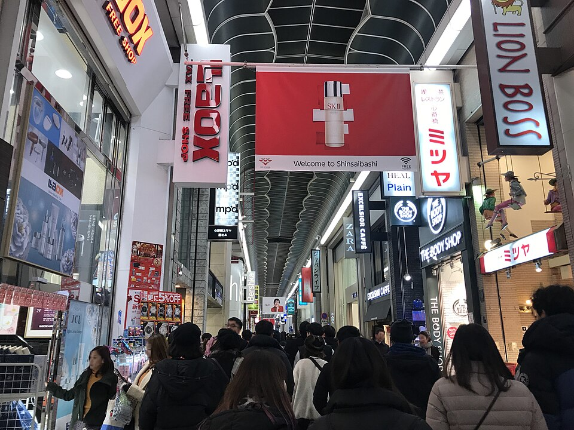
Wikimedia Commons · そらみみ · CC BY-SA 4.0 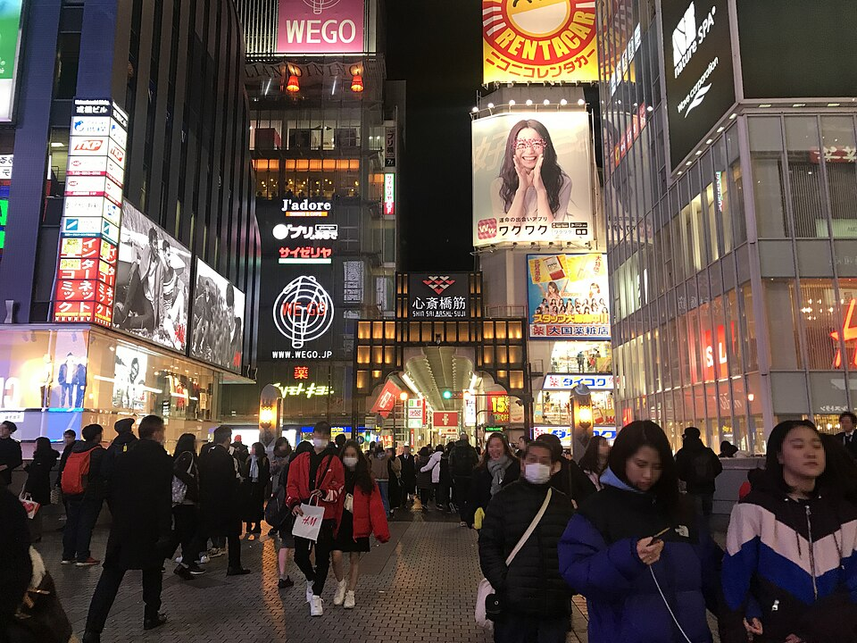
Wikimedia Commons · そらみみ · CC BY-SA 4.0
9
Shinsaibashi-suji - крытая улица
Прогулка
Длинная крытая пешеходная улица от станции Shinsaibashi прямо к мосту Ebisubashi. Вечером уже без магазинов, но людно.
Часы
улица открыта всегда, магазины до ~21:00
Как далеко
от станции Shinsaibashi ~10 мин до моста
Источник
Wikimedia
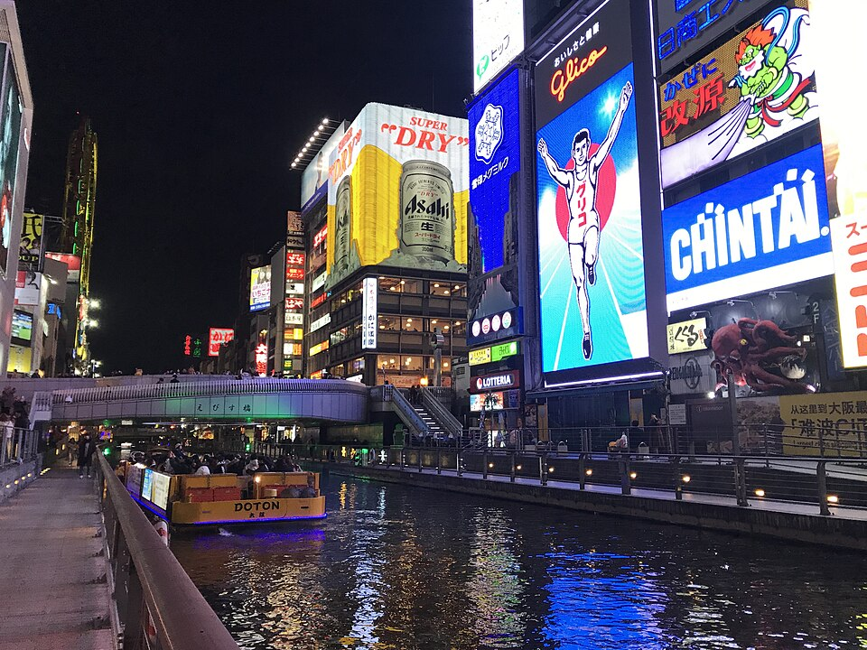
Wikimedia Commons · そらみみ · CC BY-SA 4.0 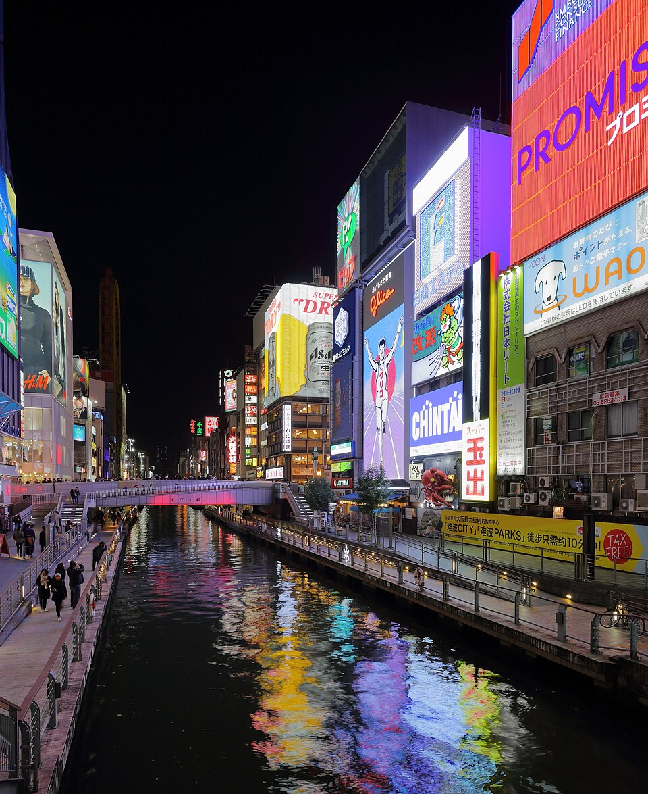
Wikimedia Commons · Martin Falbisoner · CC BY-SA 4.0 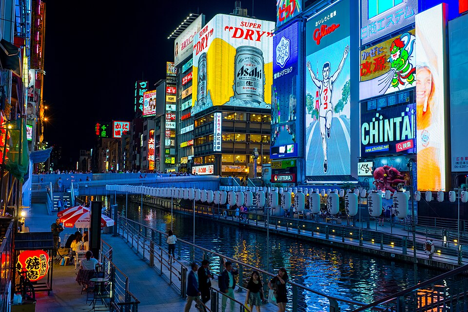
Wikimedia Commons · Kristoffer Trolle from Copenhagen, Denmark · CC BY 2.0 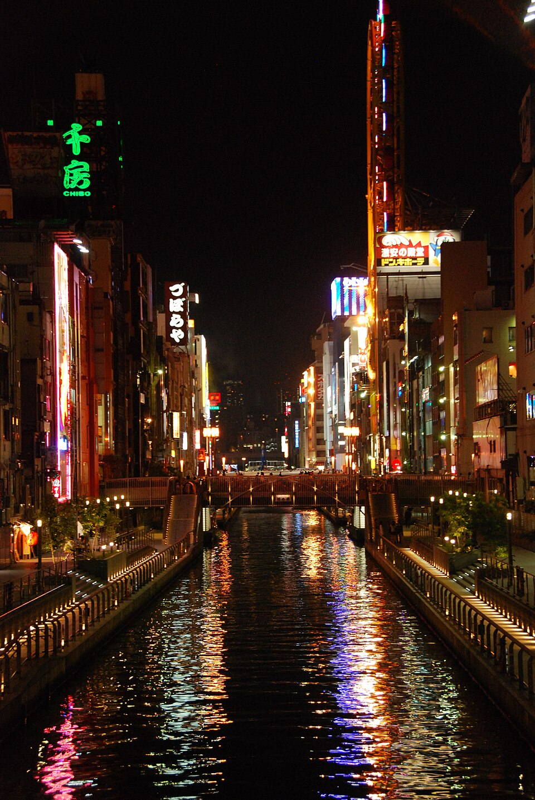
Wikimedia Commons · Maarten Heerlien from Voorschoten, The Netherlands · CC BY 2.0
10
Ebisubashi, вывеска Glico и канал Dotonbori
Прогулка
Тот самый неон Осаки: мост, бегущий человек Glico, огни над каналом. По обоим берегам набережная, вдоль неё бары и рестораны до поздней ночи.
Часы
всегда
Как далеко
от станции Namba ~5 мин
Источник
Wikimedia
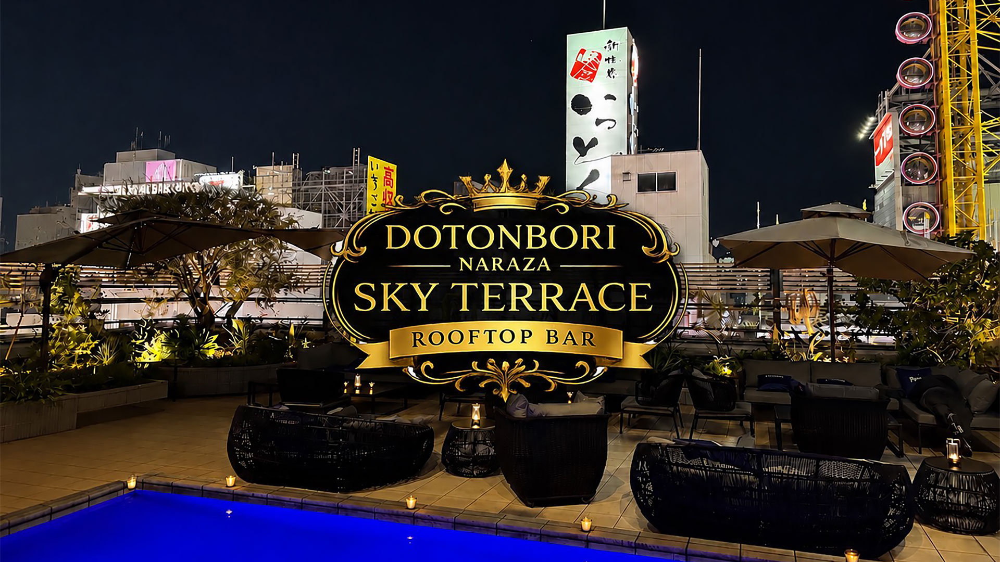
GIRAFFE Japan, офиц. сайт
11
NAKAZA SKY TERRACE - руфтоп над Dotonbori
Бар / руфтоп
Открытая терраса на крыше прямо над каналом: кальян, коктейли, по выходным DJ (по описанию на сайте). Под дождём неуютно - лучше до 23:00. Бронь через их LINE.
Часы
ночные часы на сайте не указаны · по выходным вечером DJ
Как далеко
~2 мин от Ebisubashi
Источник
giraffe-japan.com (офиц.)
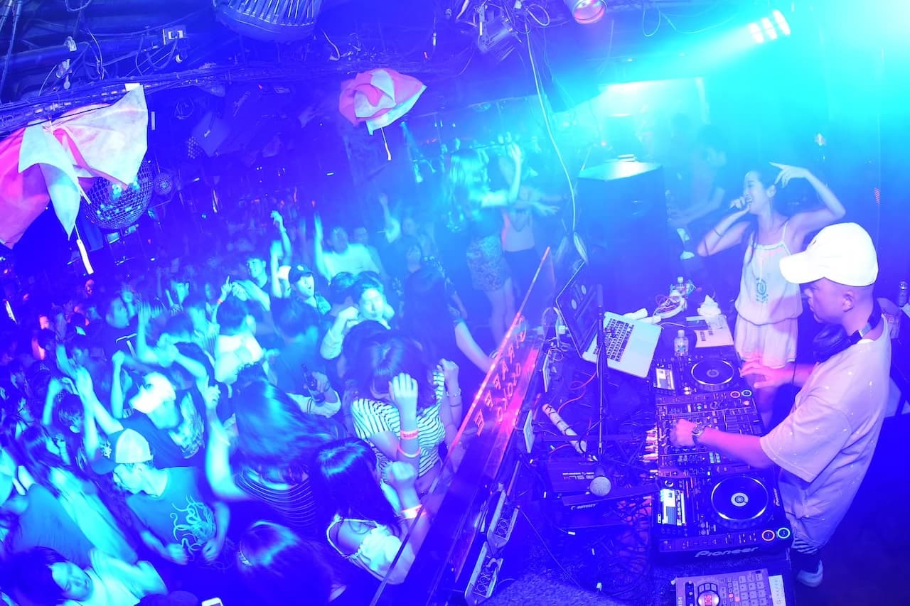
GIRAFFE Japan, офиц. сайт 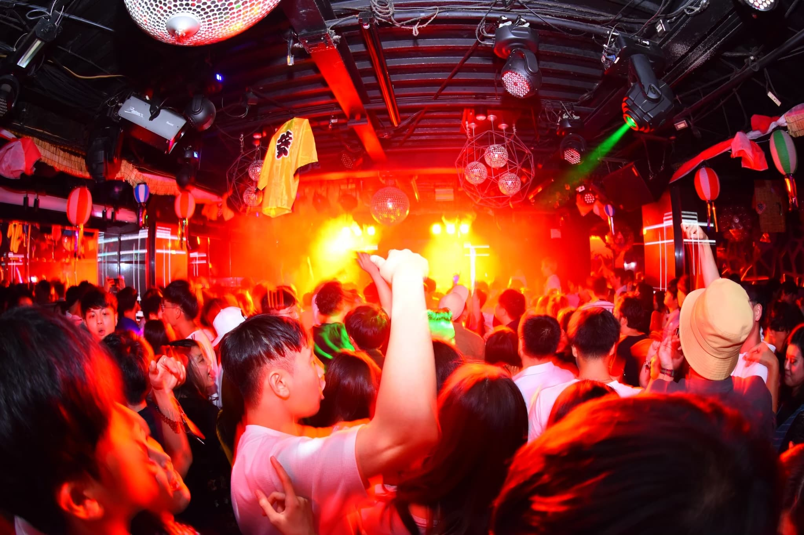
GIRAFFE Japan, офиц. сайт 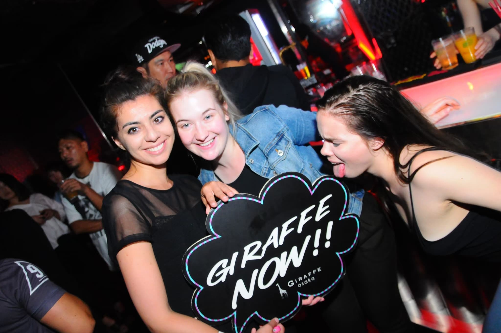
GIRAFFE Japan, офиц. сайт
12
GIRAFFE Japan - клуб, тот же дом, 5 этаж
Клуб / DJ
Большой коммерческий клуб, возрождённая легенда Minami (2025): звук d&b, дорогое шампанское, своя терраса. Музыка по гидам смешанная (EDM, хип-хоп, хаус). Туристы + местные - проще всего познакомиться. Билеты через Klook / GetYourGuide / Viator / Trip.com, цену не смотрел.
Часы
22:00-04:00 · с 19:00 до 22:00 там шоу
Как далеко
~2 мин от Ebisubashi
Источник
giraffe-japan.com (офиц.), Osaka Tourism
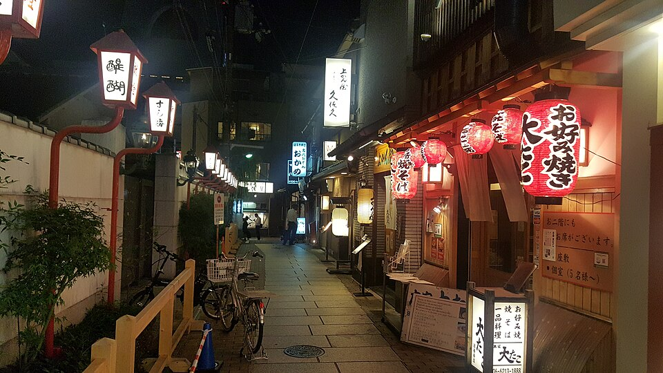
Wikimedia Commons · Choi2451 · CC BY-SA 3.0 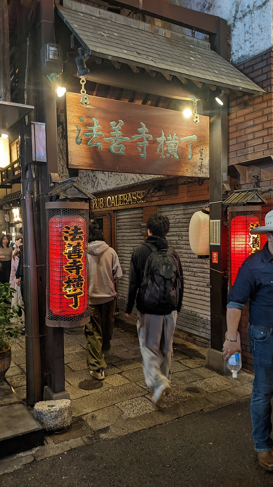
Wikimedia Commons · Mr.ちゅらさん · CC BY-SA 4.0
13
Hozenji Yokocho - переулок с фонарями
Прогулка
Узкий каменный переулок старой Осаки: фонари, маленький храм со статуей во мху, крошечные бары и рестораны. Тихий контраст рядом с неоном.
Часы
всегда · бары до ночи
Как далеко
~2 мин от Nakaza
Источник
Wikimedia
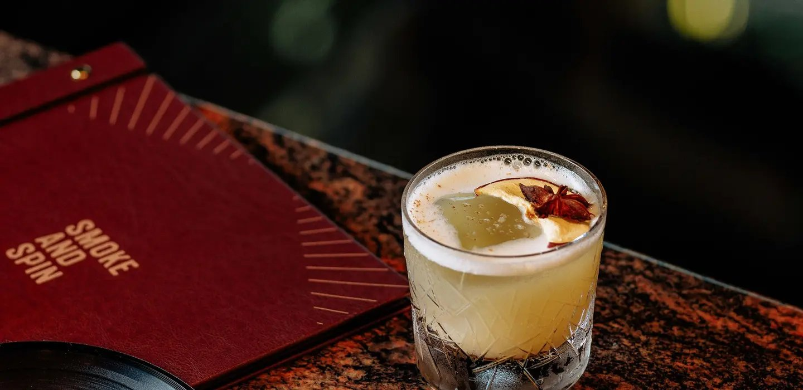
Centara Grand Osaka, офиц. сайт
14
Smoke & Spin - руфтоп-лаунж Centara, 33 этаж
Бар / руфтоп
Лаунж на 33 этаже (135 м) с видом на Namba, по сайту резидент-DJ каждый вечер. Под крышей - дождь не страшен.
Часы
11:00-24:00 (напитки до 23:30) · smart casual
Как далеко
~16 мин от Hozenji, на юг
Источник
centarahotelsresorts.com (офиц.)
фото не нашёл в открытых источниках
15
GHOST ultra lounge - Amerikamura
Клуб / DJ
Лаунж-клуб в подвале, публика наряднее среднего; музыка по разным гидам от хип-хопа до хауса. Нужен паспорт (20+).
Часы
22:00-05:00 (по гидам, офиц. сайта не нашёл)
Как далеко
~8 мин от Ebisubashi
Источник
Agoda, Culture Trip, tablejourney - не офиц.
фото не нашёл в открытых источниках
16
BAR Inc - DJ-бар (сегодня house / techno)
Клуб / DJ
Небольшой музыкальный бар с хорошим звуком, сегодня Benedek, SFV Acid, Daisuke Kakimoto. Это андеграунд, не пафос - если хочется именно музыки.
Часы
сегодня 20:00-03:00 · WEEKEND SELECTERS
Как далеко
~4 мин от станции Shinsaibashi
Источник
Resident Advisor 23.10
Не на сегодня: clubJOULE (большой клуб с руфтопом) - событий на 23.10 на сайте нет, ближайшее 24.10. По Resident Advisor сегодня ещё в основном техно (Circus, Blvck Water). Фото: Wikimedia Commons (авторы на фото) и официальные сайты мест.